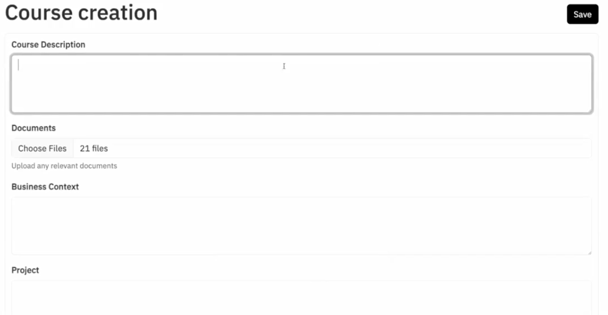
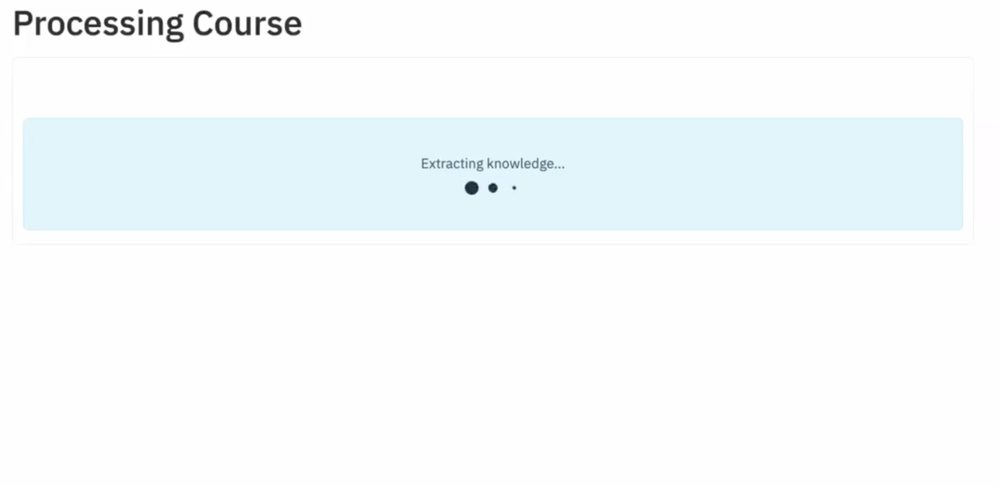
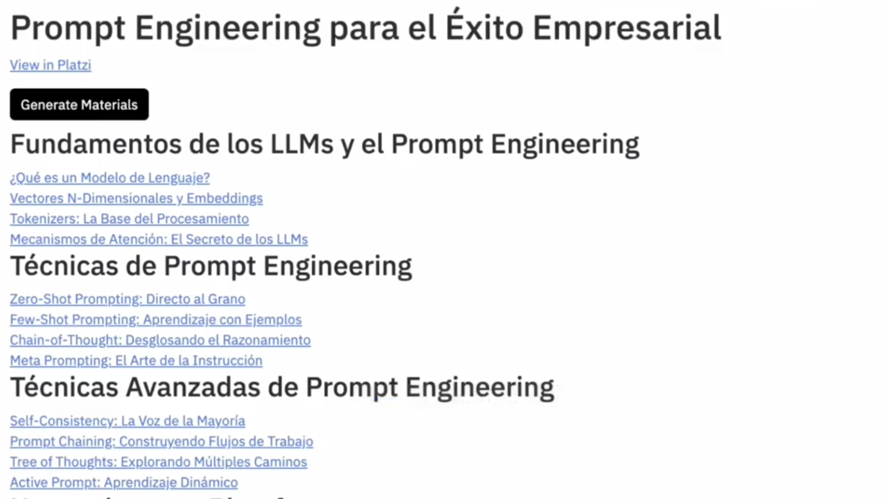
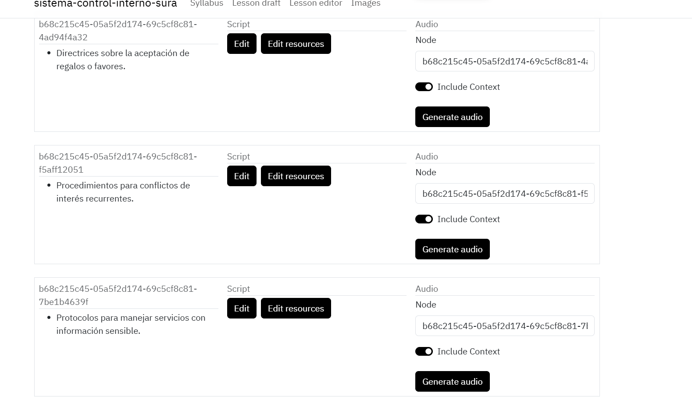

Platzi Learn V1
Transforming enterprise documentation into engaging, structured learning experiences through AI-powered course generation.
A new B2B revenue stream
Platzi Learn enabled companies to rapidly transform internal knowledge into professional learning experiences at scale.
The enterprise training challenge
Companies struggle to transform their internal knowledge into effective training programs. Documentation is scattered across formats, and creating structured educational content takes weeks of expert work.
AI-powered course generation
Multi-agent AI systems automatically turn company documentation into complete, structured courses with progressive modules, AI-narrated lessons and built-in assessments.
Building for scale and reliability
We started with a simple microservice architecture using task queues. It worked, but struggled with reliability and visibility into the multi-stage generation process as document sets grew.
The breakthrough was reimagining the system around workflow orchestration instead of task processing — managing dependencies between steps, handling failures gracefully, and processing documents in parallel with a clear view of progress.



